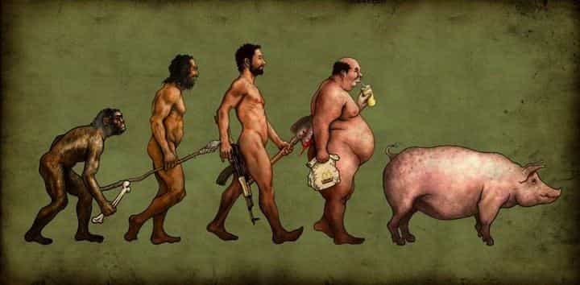

The average man today has slouched shoulders, an expanding waistline, is indecisive, and presents an overall timid nature. He exemplifies the pussification of western society. But what’s causing this? Why is it that men today are less manly than they used to be? Is it because of the rise of feminism? Porn addiction? Processed foods? Environmental toxins? I’d say yes – all of these are contributing factors. But the real reason for this decline in masculinity is something very different. And once we address this root cause, all the other factors become irrelevant.
But before diving in, let’s discuss what it means to be a man in the first place…
What Does It Mean To Be a Man?
This is a question that will get many different answers depending on who you ask. But if you asked it of the philosopher king Marcus Aurelius (or any of the ancient Stoics for that matter), he would tell you that to be a man means to live with virtue. In fact, the root word of virtue is “virtus,” which is Latin for manliness. The four cardinal virtues that the Stoics abided by were 1) Wisdom, 2) Justice, 3) Fortitude, and 4) Temperance.
Wisdom is knowledge of life and the ultimate Stoic wisdom is to concern yourself only with factors that are within your control. What are those factors? Your thoughts and your behaviors. Nothing else. Never play the victim. If you have a problem, ask yourself if there’s anything you can do about it. Yes? Then get to work. No? Then don’t worry.
Justice is living in integrity with your ideals. When we live with integrity, there is a match between our intentions and our actions. When we live without integrity, we procrastinate on the actions that would move us towards our goals.
Fortitude is courage. The courage to make decisions based on standards rather than emotions. The courage to do what needs to be done regardless of whether you feel like it or not.
Temperance is self-mastery. A master of self is engaged in the consistent pursuit of narrowing the gap between where he is and where he knows he’s capable of being. He understands that there is no finish line and that progress is the only way forward.
That’s a quick look at the four cardinal virtues that embody what it means to be a man. If you want me to dive deeper into them in another article, let me know in the comments. But now, let’s dive in to the root cause of the masculinity crisis as we face it today.
The Real Reason Men Are Less Manly Than They Used to Be

The first men walked the earth more than 5 million years ago. Through the trials and tribulations of harsh environments and dangerous predators, nature slowly molded us into what we are today. Man has taken control of his environment, tamed the wilderness, sailed the oceans, conquered nations, and even walked the moon.
You and I are the fine-tuned result of countless iterations of evolution. You were designed to be strong, fearless, confident, and powerful. The drive for greatness has been hard-coded into your DNA. Why, then, do none of these characteristics seem apparent in the average guy? Well, it’s because we are born in a modern world with a mind and body that was designed for something very different.
Genetically, we haven’t changed much over the past 100,000 years. Technologically, however, we have advanced exponentially. We are born in a world of instant gratification, social media, and Domino’s delivery with a brain that was designed for hunting wooly mammoths and fighting saber toothed tigers.
The real reason men are less manly than they used to be is because we are no longer being forced to exercise our masculinity. The human brain is a very efficient machine that was designed to conserve resources. That is another way of saying that we are lazy by nature. Since the environment is no longer forcing us to man up, the majority of men succumb to the temptation of the path of least resistance.
Our primal drives are survival and reproduction. No matter where a man falls in the strata of western society, he is likely to scrounge enough food and water to survive. As for reproduction, most men are chronic masturbaters and trick their brains into thinking that they’re reproducing. With the primal desires met, it is very easy to fall back into comfort. To become a masculine man, however, you have to exert the evolutionary pressure on yourself. You have to force yourself to grow.
How to Reclaim Your Masculinity
Yes society is becoming more feminized and there are a lot of forces trying to suppress your masculinity. But if you let these factors hold you back, then you are nothing but a pussified bluepill beta cuck. To reclaim your masculinity you have to exercise your masculinity. If you don’t use it, you lose it. How do you exercise your masculinity?
Well, the first step is to get clear on your path and purpose. Your thoughts and behaviors are the only things you have control over, so always make sure that they are directed to some end. Know the intended outcome of your actions. Begin with the end in mind.
The second step is to live with integrity. Stick to your commitments. Keep a task list everyday and complete it. Do what you said you were going to do. Keep your word to yourself.
The third step is to build courage. Take cold showers. Cold approach women. Practice martial arts. Get comfortable being uncomfortable.
And finally, understand that mastery is a never ending process. Life is about climbing one mountain peak after another. Each mountain you conquer reveals the view to a completely new landscape. There is always another level. And at every new level there is a different devil. If you’re not growing, you’re dying.
God speed.
Testosterone is the biological cause of masculinity. Download the FREE 5-Step Lifestyle Blueprint that (almost) doubled my total T-level from 564 to 902 ng/dL.
Read More: Western Society Has Become Completely Inverted